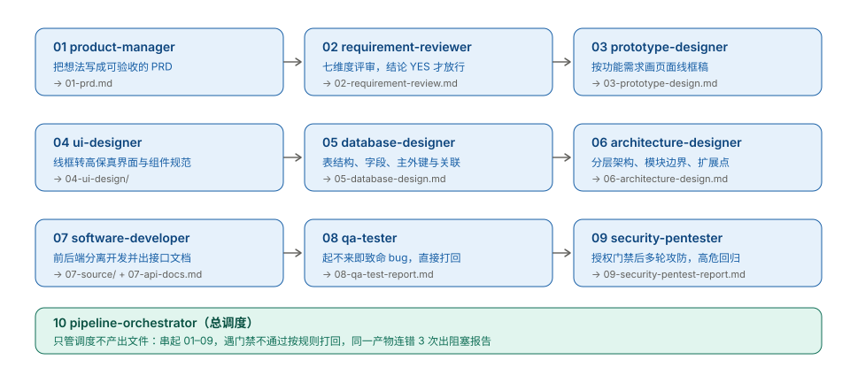

把「写需求 → 评审 → 设计 → 开发 → 测试 → 安全」拆成 10 个 Agent Skill。每棒交稿前必须跑脚本过门禁，缺东西直接非 0 退出。给用 AI 写完整项目的人用。
让 AI 写一个能跑的 Demo 很容易，写一个能交付的项目很难。难的不是写代码，是每一步之间的交接：需求没写验收标准就开工、设计缺失就开始写、代码写完没人测、扫完安全问题没人修、打回结论散在聊天记录里。
这套技能包的做法很土但有效：九棒各管一段，产物文件名写死，每棒交稿前跑校验脚本，退出码非 0 不许往下流。交接不靠口头，靠文件在不在、章节全不全、结论是 YES 还是 NO。

$ python validate_pipeline.py 全部通过：references 无悬空且版本对齐 / 门禁在 / 命名齐 / scripts 不悬空。 $ python scripts/regression_test.py 用例总数: 78 通过: 78 失败: 0 $ python scripts/smoke_pipeline.py [PASS] 棒1 PM check_prd: rc=0 (期望 0) ... 九棒门禁链全部 rc=0 ... 结果: 冒烟通过（九棒门禁链 + 打回/修复路由均符合契约），退出码 0
| 棒 | 技能 | 产出 | 门禁 |
|---|---|---|---|
| 1 | product-manager | 01-prd.md | 先确认要做，最多 3 轮追问 |
| 2 | requirement-reviewer | 02-requirement-review.md | 结论非 YES 不开工，最多打回 2 次 |
| 3 | prototype-designer | 03-prototype-design.md | 02 不是 YES 不画 |
| 4 | ui-designer | 04-ui-design/ | 原型缺失或未放行不画 |
| 5 | database-designer | 05-database-design.md | 02 不是 YES 不设计 |
| 6 | architecture-designer | 06-architecture-design.md | 无 FR 清单或 05 未定稿不设计 |
| 7 | software-developer | 07-source/ + 07-api-docs.md | 02 非 YES 或设计不齐不写 |
| 8 | qa-tester | 08-qa-test-report.md | 起不来 = 致命 bug 直接打回 |
| 9 | security-pentester | 09-security-pentest-report.md | 外部 / 公网目标一律拒绝 |
| 10 | pipeline-orchestrator | 不产出文件 | 只调度：串棒、打回、连错 3 次出阻塞报告 |
每棒一份。它是什么、为什么要有它、具体怎么一步步做、做错了会怎样。第一次用从这看。
每棒一份。输入输出契约、外部依赖、能力边界、优缺点与缓解办法、失败模式。要改技能看这。
完整规则、退出码语义、独立部署命令对照表。规则冲突时以它为准。
它不是通用技能。它假定你做的是有前后端、要交付的中小型 Web 项目。换成纯算法库、数据分析脚本、嵌入式固件，架构分层与安全攻防两棒就不适用，硬套只会产出没人看的文档。它也不替你判断值不值得做——第 1 棒只追问到"边界清楚"为止。
Python ≥ 3.9，八个校验脚本只用标准库，零 pip install。安全棒可选深度扫描 pip install "bandit==1.9.4"，不装也能跑。